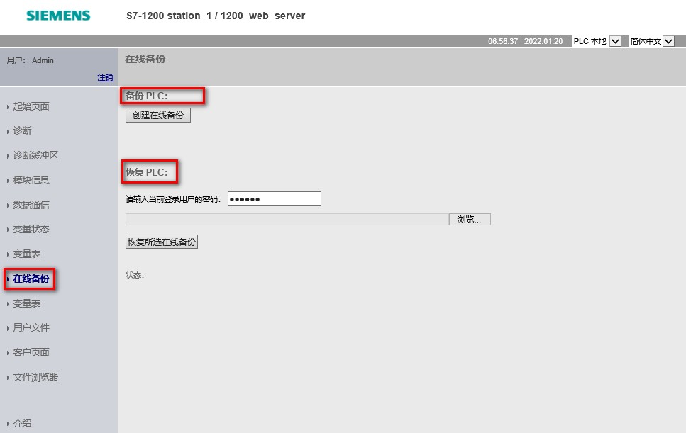
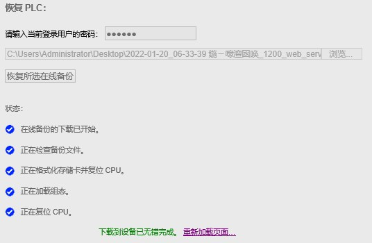

在线备份页面可以为在线 PLC 创建项目备份，或者恢复之前创建的 PLC 备份，如图 1 所示。
 注意：
注意：

图 1.在线备份
创建或恢复备份之前，需要将 PLC 置于停止模式并停止与 PLC 之间的全部通信（例如，HMI 访问）。如果 CPU 未处于停止模式，则备份和恢复功能会在继续执行之前提示 CPU 处于停止模式，如图 2 、图 3 所示。
 注意：
注意：
如果现场不允许停机，请不要使用该功能！
图 2.备份时需要停止 CPU
图 3.恢复时需要停止 CPU
在执行恢复备份项目时，会有恢复的状态提示，如图 4 所示。
在执行加载组态前，需要重新输入用户名和密码进行用户登录，如图 5 所示。

图 4.恢复备份项目状态提示
图 5.恢复备份中用户重新登录
 注意：
注意：